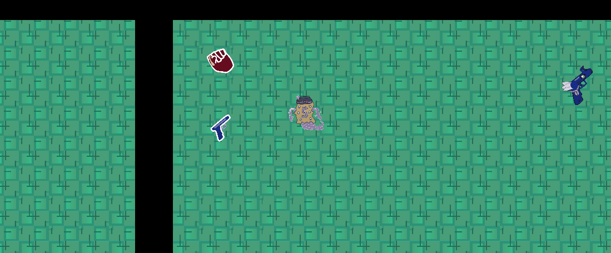

MAD: Mutually Assured Destruction
Mutually Assured Destruction is a top-down endless shooter game I made with 3 other designers over 3 days for the UChicago Game Jam. To fit the theme of "X within an X," we decided on a system where your weapons can contain other weapons which make them more powerful.
I was responsible for programming the recursive weapons systems, enemy behavior, menus, and some smaller quality of life features. This project was coded with Unity using C#.
Through this project, I gained experience collaborating with designers I was meeting for the first time. Specifically, we found assiging clear roles helped us distribute the work effectively. This was also a great way to test the development skills I've fostered over the years in a context with relatively high pressure due to the time limit. Data structure management and event-based architecture were particularly important for implementing the weapons systems.
To play this endless browser-based game, go to this link: https://daemonrg.itch.io/mutually-assured-destruction-d or play in the window above. The code can be viewed on this GitHub page: https://github.com/albanezla08/MAD.

Weapons pickup and firing

Gun enemy behavior